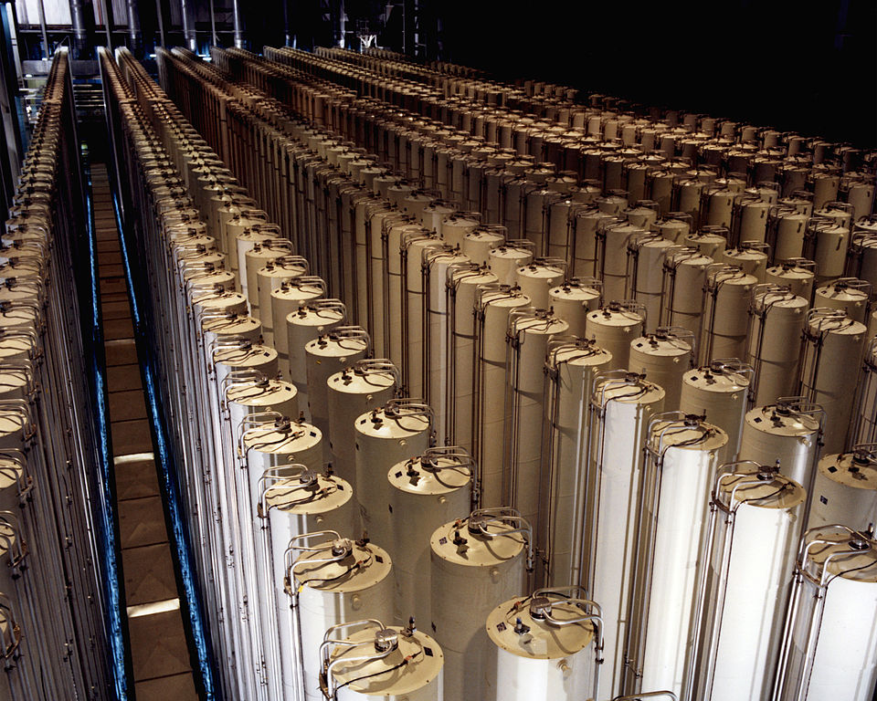

CS 3710
Introduction to Cybersecurity
Aaron Bloomfield (aaron@virginia.edu)
@github | ↑ | 
Stuxnet
Background
Definition: PLC
- PLC: Programmable Logic Controller
- A “computer used for automation of electromechanical processes”
- Typically used in assembly lines, amusement rides, light fixtures, etc.
- Often has many more inputs and outputs than a typical PC might have
- Often hardened against the environment (dust, water, vibration, etc.)
- Programmed via a PL on a PC, then the program is transferred over to the PLC
Definition: SCADA
- Supervisory Control And Data Acquisition
- A industrial control system to monitor some industrial process (such as uranium enrichment)
- Components:
- A human-machine interface for human monitoring
- Supervisory computer control system
- Sensors and actuators
- PLCs that are between the sensors and actuators
- Etc.
Uranium enrichment
- Uranium comes in six isotopes, two of which we care about for this lecture:
- Uranium 238: 99.27%
- Uranium 235: 0.71%
- While all are radioactive, and all are unstable, U-235 is the most usable in nuclear (fission) reactions
- A typical nuclear reactor requires 3.5% U-235 to sustain a reaction
- A nuclear weapon requires 90% U-235
- But the isotopes are intermixed; how to separate them?
Uranium enrichment
- After the uranium is mined, it is converted into a gas: uranium hexafluoride (UF\(_6\))
- (well, it’s gas at 134 degrees Fahrenheit)
- The UF\(_6\) is then put into a centrifuge, and spun around at high speeds
- The heavier U-238 moves to the outside, the lighter U-235 moves to the inside
- This is done repeatedly until the appropriate concentration of U-235 is reached
Uranium enrichment
Peaceful uranium enrichment?
- The technology to produce weapons-grade uranium is the same as to produce reactor-grade uranium
- It just takes a LOT more money and time (and produces much more waste)
- One of the jobs of the IAEA (International Atomic Energy Agency) - a UN organization - is to monitor countries to ensure that they are enriching uranium for peaceful means
- I.e., only to a 3.5% U-235 concentration
Political background
- These slides are meant as a neutral but honest assessment, and is not taking a stand one way or the other
- Recently, many countries have been trying to develop “the bomb”
North Korea, Iran,Pakistan,India, etc.
Political background
- Iran and North Korea (DPRK) are considered to being “close” to achieving this
- (DPRK has it, depending on your definition)
- And they have repeatedly threatened the US (and, in Iran’s case, Israel, a close US ally)
- And the US doesn’t have any (direct) diplomatic relations with either them
- And they have rebuffed IAEA monitoring (although Iran allowed some in rather recently)
Iran’s nuclear program
- Started in the 1950’s, it had significant US assistance until the 1979 Iranian revolution
- Primary uranium enrichment facility is at Natanz
- The first nuclear reactor went online in September 2011
- The reactor was built with Russian assistance
- Iran has “undertaken research and experiments geared to developing a nuclear weapons capability”
- From an IAEA report in November 2011
Zero-day exploit
- A zero-day attack is an exploit against some system that:
- Is unknown to many, possibly including the developer
- Typically has no patch available to fix the vulnerability
- Note that this is an exploit, not just a vulnerability
- You can easily fetch a million dollars on the black market for such an exploit
- Term etymology is because it occurs “on or before the zeroth day of developer awareness”
Overview
Overview
- Stuxnet infected the computers in Iran that controlled the uranium centrifuges
- It recorded what a “proper” reading would be
- Then caused them to spin out of control
- This caused significant damage to Iran’s ability to enrich uranium
- First identified in June 2010, it was estimated that it started spreading in March or April of 2010
- 1.5 years before Iran’s first nuclear reactor went online
Target
- Stuxnet had little affect on systems that were not running Siemen’s SCADA software for uranium enrichment
- It would try to propagate a certain number of times (3), and then become inert
- And it only did anything malicious on systems with the VERY specific configuration that Iran’s systems used
- The target seemed to have been Iran’s uranium enrichment facility at Natanz
Four (4!) Windows zero-day attacks!
- There were FOUR separate zero-day attacks against Windows
- Plus two vulnerabilities that were already known, but not everybody had patched against
- Using four was unprecedented
- Malware writers typically will only use one at a time
Rootkit capability, take 1
- After using one of the 6 exploits…
- The 4 zero-day attacks or the 2 known attacks…
- … it installs both a kernel-level and application-level rootkit on Windows
- The device drivers have been digitally signed with stolen certificates from real companies in Taiwan
- Those two certificates have since been revoked by Verisign
- The device drivers have been digitally signed with stolen certificates from real companies in Taiwan
Rootkit capability, take 2
- The Siemens SCADA system used for uranium enrichment used PLCs
- And Stuxnet contained a rootkit for these PLCs
- But only PLCs from two vendors: a Finnish company and an Iranian company
- These PLCs are used to control the speed of the motors of the centrifuges
- The rootkit does the actual changing of the motor speeds
Windows <-> PLC communication
- Stuxnet subverts the DLL that is used to communicate with the PLCs
- This was done through yet another zero-day exploit on the SCADA software (a hard-coded DB password)
- This modified DLL allows the reprogramming of the PLC (with the PLC rootkit) without detection by any of the other security software
Man-in-the-middle attack
- Stuxnet modified the PLC communication DLL
- And then installed a rootkit on the PLCs
- This was thus a man-in-the-middle attack
- And this complexity is “unusual” for malware
Metamorphism
- And it mutates, as well!
- Little information is available on this, but my best guess is that it is metamorphic (i.e., body polymorphic)
- That capability was available over a decade ago
- And it’s not like the creators lacked technical ability…
How to classify Stuxnet?
- It’s a worm (one of the ways it spreads)
- It has viral infection capabilities (when it infects the PLC communication DLL)
- It was two rootkits (against Windows and the PLC)
Fallout
(pun intended)
Identification
- Stuxnet took longer to identify than almost any other piece of malware
- Meaning once they started analyzing it
- Partly due to the necessity to have the Siemens hardware to fully analyze it
- Even today, its full capabilities are not fully understood
Countries affected
- Iran: 59.8%
- Indonesia: 18.2%
- India: 8.3%
- Azerbaijan: 2.6%
- United States: 1.6%
- Pakistan: 1.3%
- Others: 9.2%
Stuxnet firsts…
- Use of 4 zero-day exploits on Windows
- A rootkit against a PLC
- Attacking SCADA software
- Causing this much physical damage
- Being anything remotely this complex
Effects on Iran
- Shutdown the centrifuges at Natanz for a time
- Over the course of a year, the output from Natanz was decreased by 30%
- And was up again the next year, but not to full production capacity
- Destroyed 1,000 centrifuges
- But Iran had at least 5,000 there
- Why did it destroy so few? Nobody knows…
- Obviously embarrassment for Iran
- But it probably only delayed their enrichment goals by a year (or two, at most)
Whodunit?
- Pretty much everybody agrees that this was only done “with nation-state support”
- The US and Israel are the top of the speculation list
- As they had the most reason to want to derail Iran’s nuclear program (and have been trying for some time)
- Many think it was a joint effort between the two
Whodunit?
- A Wired article from 2013 claims it was a joint effort between the NSA, CIA, and Israeli intelligence
- Snowden claimed this also in 2013
- But of course nothing has been (formally) admitted
Final Stuxnet notes…
- It deletes itself on June 24, 2012
- Not sure why…
- It is a very LARGE piece of malware: 1/2 Mb
Aftermath
Duqu
- Symantec: “nearly identical to Stuxnet, but with a completely different purpose”
- Symantec claims it was built by the same author or by somebody with access to the Stuxnet source code
Similarities with Stuxnet
- The installer exploits zero-day Windows kernel vulnerability(ies)
- Components are signed with stolen digital keys
- Duqu and Stuxnet are both highly targeted and related to the nuclear program of Iran
Zero-day exploit
- It used a zero-day exploit in Microsoft Word
- In the TrueType font parsing engine that allows arbitrary code execution (probably a buffer overflow)
- This came in the form of a MS Word (.doc) file!
Purpose
- Apparently it’s to capture information, such as digital certificates
- It removes itself after 36 days, this limiting the ability to detect it
- The full capabilities of Duqu are not yet known, either
Flame
- Malware from 2012; most sophisticated at the time
- Many “modules” for the various “features” of the malware
- Customizes its behavior based on the anti-virus software installed
- Mostly information gathering payloads